ホーム
作品
展示
実績
コンタクト
English
作品
作品を新しいものから紹介します。
Egaroucid (2021-)
世界最強のオセロAI
過去・現在・未来 (2022)
オセロAIを通して考えるコンピュータと人間の未来
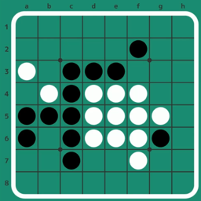
オセロの音 (2022)
オセロの棋譜の音楽化
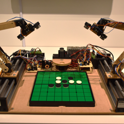
Isevot (2022)
ロボット同士によるオセロ
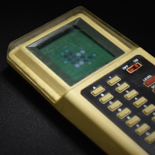
コンピューターオセロ (2022)
1980年のオセロAIを換装
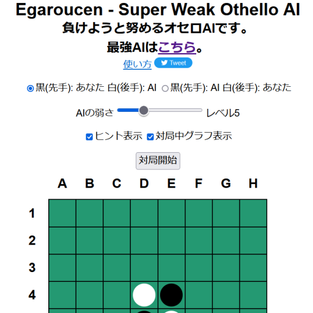
Egaroucen (2021-2022)
世界最弱のオセロAI
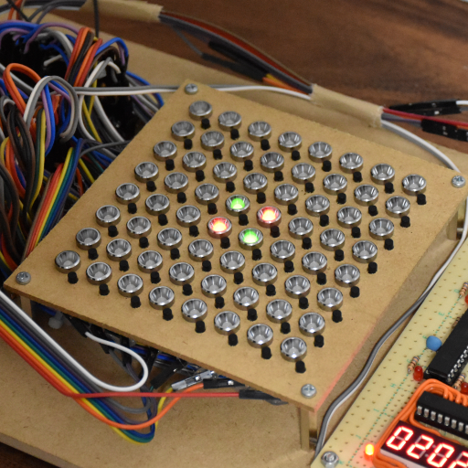
レトロオセロAI (2021-2022)
8bitマイコンで動かすオセロAI
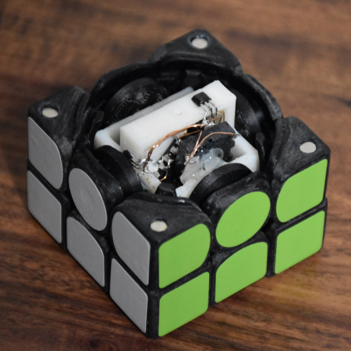
CuYu (2021)
ルービックキューブ型楽器
QiaoKe (2021)
自作2x2x2キューブ
Studth (2021)
アーテックブロックで作るルービックキューブロボット
NyanTimer (2019-2021)
スピードキューブ専用タイマー
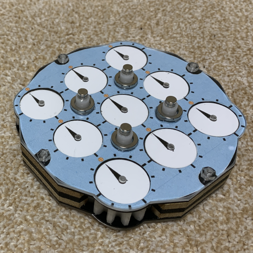
NyanClock (2020-2021)
自作クロックパズル
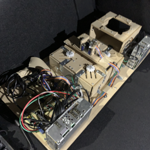
Solock (2020)
ルービッククロックを世界最速で解くロボット
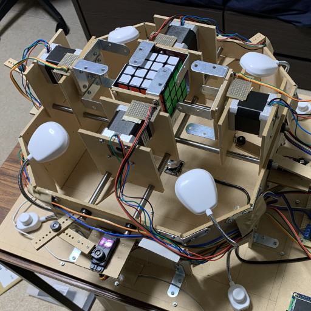
Solvour (2020)
4x4x4キューブを解くロボット
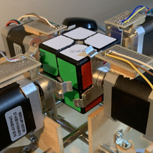
Soltvvo (2020)
2x2x2キューブを世界最速で解くロボット
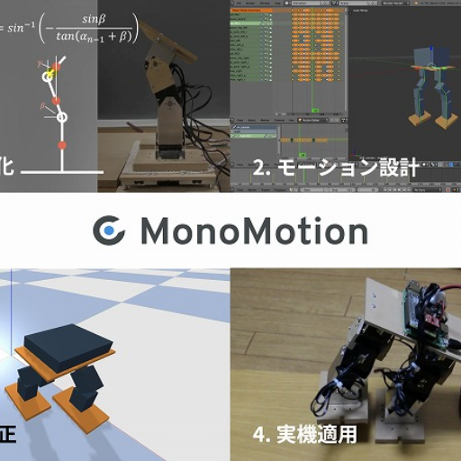
MonoMotion (2017-2019)
ロボットのモーション作成支援システム
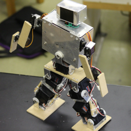
YamaX (2014-2019)
自作ヒューマノイドロボット
やまみじゅた1号 (2014)
RoboCup Junior レスキューA部門東東京大会に出場したロボット